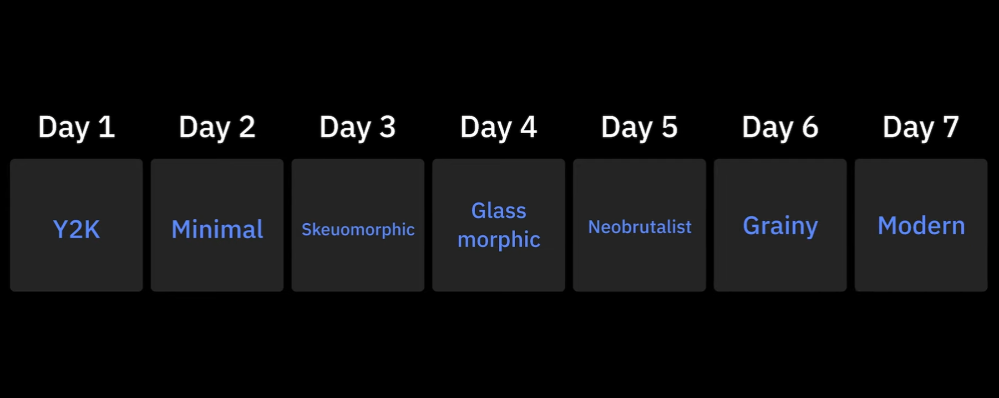
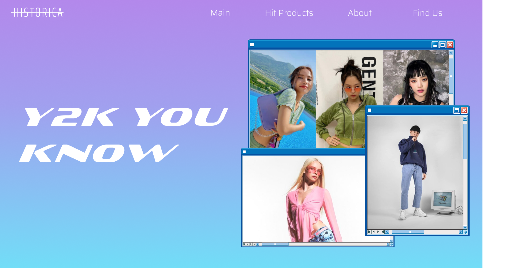
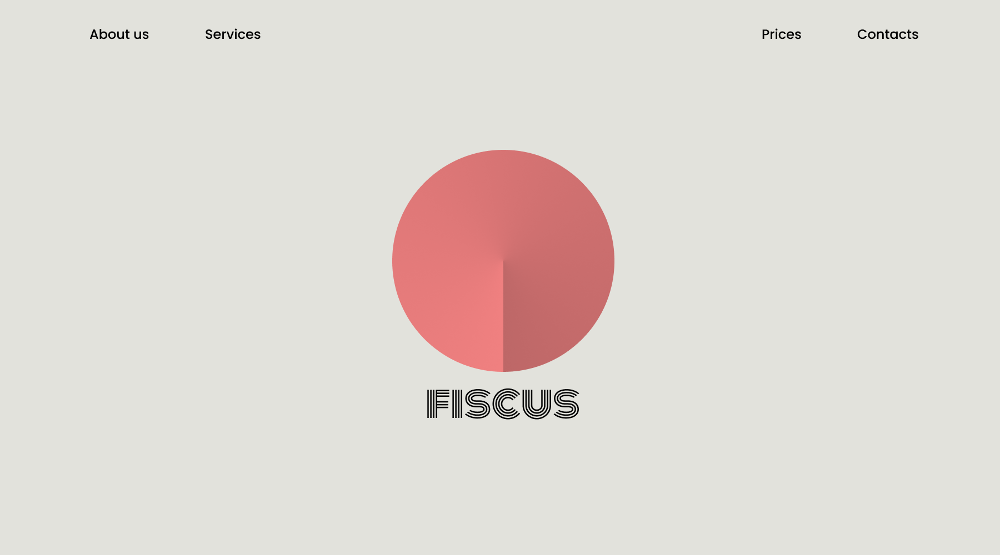
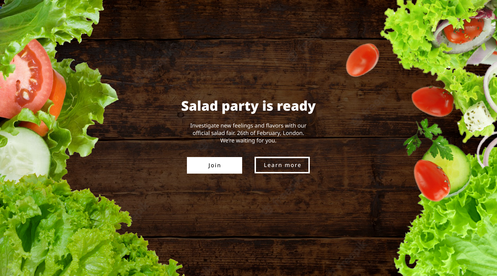
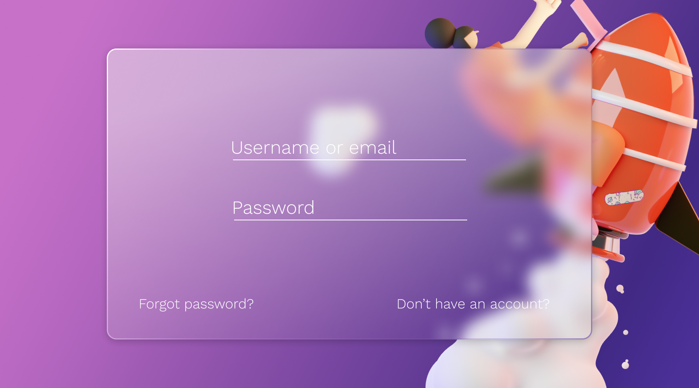
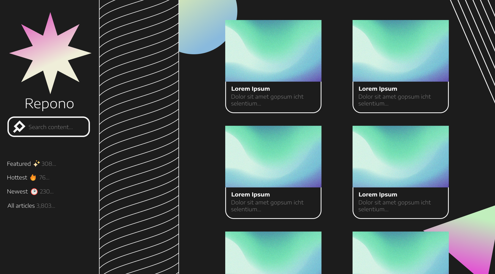
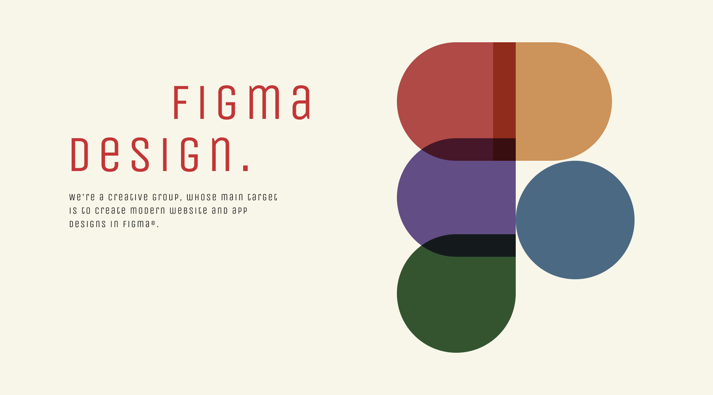

So, first of all: what is #JuxStyleChallenge? It's a small design challenge, contested by a youtube channel Juxtopposed (Go watch her videos, they're amazing). And so I tried to participate! I don't want to use XTwitter, so I'll just post it here. Seriously, who can stop me?
7 days, 7 design styles.
Day 1: "Y2K"
Y2K - Stands for early 2000's. So, that's what I got:
Y2K was the hardest one for me. You see, I don't actually know how website looked like in the 2000's. My work was based on the designs I found in Google search. Fonts were already obvious, and I got the palette from coolors.co. I'm pretty much sure it's unaccurate. The fact that I found good Windows XP window (Funny) template is already an achievement. The aesthetic is not so good anyways, at least in my opinion.
Day 2: "Minimalism"
And this one was my favorite! Minimalism is one of the best art styles, at least for me. My inspiration was a design group from Kosovo named Deep Yellow. I've used an angular shade to mimic the 3d effect. From latin, "fiscus" can be translated as a moneybag. I think it's pretty easy to realize this is a financial company. The colors were just taken from the roof. Up to the next one!
Day 3: "Skeuomorphism"
Skeuomorphism is about making the asset look real. Like if it was a photo of an object. It was very popular at the beginning of the previous decade. Right after then, it was absolutely hated and underrated. Long story short, realistic designs have made us stagnate. But now, Skeuomorphism has its second breath i'd say. I always've thought it looked cool.
Day 4: "Glassmorphism"
Glassmorphism is trying to have a look of glass. Maybe not so polished one, but glass. This style is way more flexible than you might think! You can make it look more neon, like a bubble or even something from sci-fi movies. It got very popular over the past few years. Because it has become so much easier to recreate. Glassmorphism is a trend, a good one.
Day 5: "Neobrutalism"
Neobrutalism is so good. I've used uh... "black" version of it? Because you can make it look more funky, or conversely, more elegant and art-chaotic. As again, company's name is a latin word, which stands for "stock" or "store".
Day 6: "Grainy"


This one is a business card! I know it's technically off the rules, but the whole point was just to try different styles. The phrases I've used are so naive and cliche, but after all, it's more of a template. I'd totally use a card like this if I needed to. Yes, it's only a grainy gradient, not a grainy object or grainy... everything.
And, the final one is....
Day 7: "Modern"
In a more direct way. For me, "modern" means actual art modern, and not something trendy and present. So, I've tried to make it look like a modern style painting.
This is all I've got! I've spent a plenty of time on these. The challenge was great.
Credits
Photos used:
- Korean Fashion Trend Alert: The Y2K Aesthetic Is Making A Comeback In Spring/Summer 2022
- https://www.pinterest.com/davemoyes101/y2k-fashion-men/
- Y2K AESTHETICS: MAIN ELEMENTS OF STYLE OF THE EARLY 2000s (ru)
- Freepik Gradient
- Freepik Gradient
- 3D assets
- Salad photo
- Vegetables
- Salad photo
- Lettuce photo
Fonts used:
-
Day_1 = Sofachrome, Saira
-
Day_2 = Monoton, Poppins
-
Day_3 = Noto Sans
-
Day_4 = Work Sans
-
Day_5 = Encode Sans
-
Day_6 = Rubik Mono One, Urbanist
-
Day_7 = Unica One